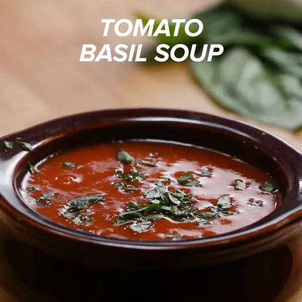

Tomato basil soup

Easy to make, hard to forget tomato basil soup
When you are a soup girl/guy like me, this will be something for you
Ingredients
for 8 servings
- 1 tablespoon oil
- 1 onion, chopped
- 1 stalk celery, chopped
- 3 cloves garlic, minced
- 1 teaspoon salt
- ¼ teaspoon pepper
- 2 tablespoons tomato paste
- ¼ cup fresh basil (10 g)
- 800g of crushed tomatoes
- 6 cups vegetable broth
- ½ teaspoon baking soda
- 2 sprigs fresh thyme
Preparation
- Combine oil, onion, celery, and garlic over medium heat in a large pot. Sauté for 3 minutes until onions are translucent.
- Add salt, pepper, tomato paste, basil, crushed tomatoes, broth, baking soda, and thyme. Bring to a boil.
- Lower heat and cover, simmering for 15 minutes.
- Uncover and remove thyme.
- Use an immersion or counter-top blender to blend the soup until smooth.
- Allow to cool 2 minutes and serve topped with basil.
Return to Home